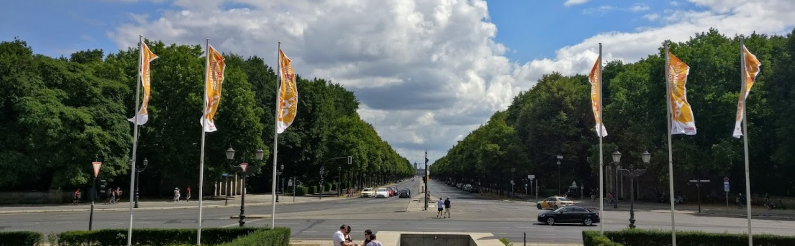

1.
Tønsberg, Norway
10+/10
Seconda città più popolata contea di Vestfold og Telemark, nel sud-est norvegese. Ho
visitato Tønsberg in occasione del Capodanno 2019. Avendo soggiornato da amici del luogo, ho avuto
modo di esplorare l'intera città in tutta la sua bellezza: la leggenda vuole che sia la città più
antica della Norvegia, fondata dai vichinghi nel IX secolo! Tra i classici luoghi d'interesse più
famosi, sicuramente il più memorabile è lo Slottsfjellet - un'antica fortezza situata in
cima alla città: la vista da lassù è così bella che, ad oggi, continuo ad usare la stessa portrait
come foto profilo in qualunque social, scattata proprio ai piedi della fortezza. L'unica pecca di
Tønsberg, chiaramente, sono le temperature invernali imperdonabili; tuttavia, per chi preferisce il
clima freddo - come me - questo è un altro punto a favore.
Storslått.
2.
Haarlem, The Netherlands
10/10
Capitale della regione di Noord-Holland, ed ultima tappa del mio viaggio
DiscoverEU, l'iniziativa europea per favorire la mobilità e il turismo all'interno
dell'Unione. Provenendo da una serie di tappe sparse per l'Europa settentrionale, arrivo ad Haarlem
il sedicesimo giorno di viaggio, e vengo ospitato, insieme al mio gruppo, da un amico, che ci mostra
gli innumerevoli luoghi d'interesse che ricoprono questa tranquilla cittadina a 20km da Amsterdam.
L'Olanda, ovviamente, si fa sempre riconoscere per le sue utilissime piste ciclabili, che consentono
al 100% di poter vivere senza auto, ed il fatto che raggiungessi quotidianamente la capitale in
bici, credo ne sia la prova.
Beautiful.
3.
Bruges, Belgium
10/10
Quarta tappa del mio viaggio DiscoverEU, Bruges è la città più popolata della Provincia
belga delle Fiandre Occidentali. Questa piccola città, chiamata anche la Venezia del Nord, possiede
un centro storico patrimonio UNESCO, all'interno del quale abbiamo soggiornato, e che siamo riusciti
ad esplorare nei nostri pochi giorni di permanenza. Senza dubbio, è una delle città che più mi ha
segnato tra tutte, soprattutto per la sua atmosfera, così tranquilla da aver "spezzato" la frenesia
che ha, invece, caratterizzato tutte le altre grandi città visitate.
Unforgettable.
4.
Sydney, Australia
9/10
Capitale del New South Wales e città più popolata dell'Oceania. Visitai Sydney per l'ultima
volta nel lontano 2011, motivo per il quale - chiaramente - non ho potuto esplorare la città così a
fondo come sarebbe richiesto per una metropoli del genere. Tra le opere più imponenti, impossibile
non menzionare la spettacolare Opera House, mostrata in foto, e la Sydney Tower,
il grattacielo di 309 metri che offre una visione panoramica mozzafiato su una delle prime skyline
al mondo ad illuminarsi per celebrare l'arrivo di ogni nuovo anno.
Impressive.
5.
Copenhagen, Denmark
7/10
Prima tappa del mio viaggio DiscoverEU. Capitale della Danimarca, patria della Carlsberg,
la città si offre come un mix perfetto tra una qualsiasi capitale, ed una tipica cittadina
scandinava: Copenhagen è tappezzata di spazi all'aperto curati meticolosamente, tra cui parchi,
giardini regali, laghi e quant'altro. Come le principali città olandesi, anche Copenhagen è
ricoperta di piste ciclabili, ma azzarderei che l'esperimento "danese" non sia riuscito a pieni
voti, dal momento che l'enorme quantità di ciclisti causava ingorghi stradali ad ogni singolo
incrocio. A ciò si aggiunge l'atteggiamento scortese di molti pendolari, che non perdevano occasione
a sgridare chiunque non rispettasse la regola della marcia a destra...
Interesting.
6.
Berlin, Germany
7/10
Seconda tappa del mio viaggio DiscoverEU. Tra le principali città tedesche, Berlino non è
sicuramente la prima in lista per molti turisti - i quali potrebbero optare per Amburgo, Monaco,
Francoforte - e proprio per questo abbiamo voluto vedere cosa avesse da offrire. La Capitale, enorme
e dispersiva, si mostra incredibilmente curata in ogni suo dettaglio. Non mancano, inoltre, luoghi
come Tiergarden, un enorme parco di 210 ettari ideale per prendersi una pausa dalla vita di
città. Ovviamente, Berlino offre anche una lunga serie di musei ed opere in memoria delle vittime
degli orrori della Seconda guerra mondiale, completamente gratuiti. Tuttavia, Berlino sembra
accettare il fatto di non essere una destinazione turistica, quanto più un centro economico e di
lavoro.
Wonderful.
